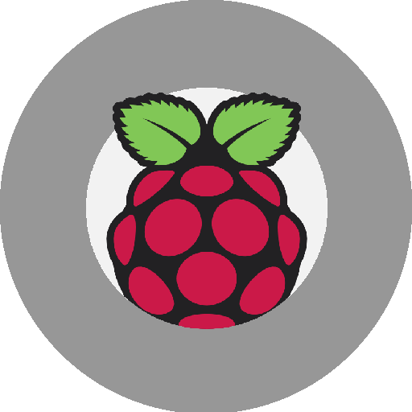

-
This Website
See the CodeI designed this entire website using code snippets from CodePen and a lot of Stack Overflow. I am currently hosting it using GitHub Pages; check out the code.
-
Project Doom
Spit a VerseDoom is a program used for semantic analysis of rap verse lyrics, rhyming schematic optimization, and rapper classification from meta rhyme data. Named after the great rapper MF Doom.
-
The Crimes that Divide Us
Feel the DivideBy most measures, the U.S.A. has become a safer place for the average citizen. Crime rates have decreased, but is this decrease universal across the states and cities of America? During my Senior year, I created this project investigating a potential divide.
-

Private Cloud and Automation Server
Build a Cloud
Automate your HomeUsing a command line Linux distribution called DietPi on a Raspberry Pi B3, I built a private cloud for storage within my home network with a server to run Homeassistant automation tasks.
-

Data Driven Ad Headline Analysis
Read the PaperCheck out the paper I wrote when working for the Harvard N.E.R.D. Business School lab my Senior Fall. I’d love to hear feedback from the data science and marketing community.
-
Psychiatric Recommender System
See the ModelAt Harvard, I worked with two brilliant computer scientists on a proposal to use a collaborative filtering recommender system to prescribe depression treatments based on their efficacy, correlated with patient demographics.
-
GameFriend
Make a FriendGamefriend is a simple database query system focused on storage and retrieval of video game information. Using Microsoft’s NLP API named LUIS, I created a system that takes in questions and outputs relevant database information.
(Icons downloaded from here)